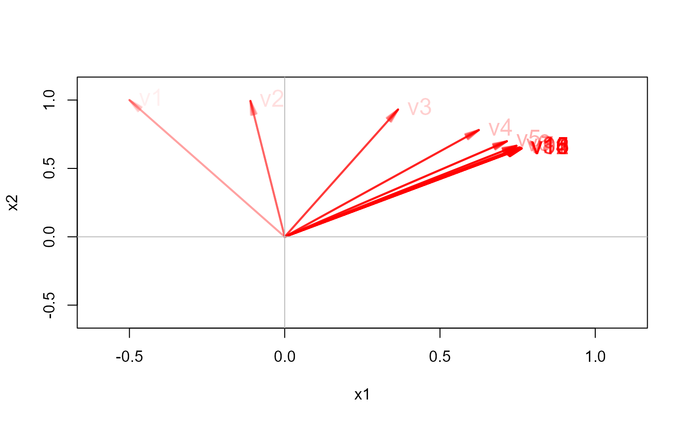

Finds a dominant eigenvalue, \(\lambda_1\), and its corresponding eigenvector, \(v_1\), of a square matrix by applying Hotelling's (1933) Power Method with scaling.
Arguments
- A
a square numeric matrix
- v
optional starting vector; if not supplied, it uses a unit vector of length equal to the number of rows / columns of
x.- eps
convergence threshold for terminating iterations
- maxiter
maximum number of iterations
- plot
logical; if
TRUE, plot the series of iterated eigenvectors?
Value
a list containing the eigenvector (vector), eigenvalue (value), iterations (iter),
and iteration history (vector_iterations)
Details
The method is based upon the fact that repeated multiplication of a matrix \(A\) by a trial vector \(v_1^{(k)}\) converges to the value of the eigenvector, $$v_1^{(k+1)} = A v_1^{(k)} / \vert\vert A v_1^{(k)} \vert\vert $$ The corresponding eigenvalue is then found as $$\lambda_1 = \frac{v_1^T A v_1}{v_1^T v_1}$$
In pre-computer days, this method could be extended to find subsequent eigenvalue - eigenvector pairs by "deflation", i.e., by applying the method again to the new matrix. \(A - \lambda_1 v_1 v_1^{T} \).
This method is still used in some computer-intensive applications with huge matrices where only the dominant eigenvector is required, e.g., the Google Page Rank algorithm.
References
Hotelling, H. (1933). Analysis of a complex of statistical variables into principal components. Journal of Educational Psychology, 24, 417-441, and 498-520.
Examples
A <- cbind(c(7, 3), c(3, 6))
powerMethod(A)
#> $vector_iterations
#> v1 v2 v3 v4 v5 v6 v7 v8
#> [1,] 1 0.7432941 0.7559462 0.7604661 0.7620956 0.7626851 0.7628986 0.7629760
#> [2,] 1 0.6689647 0.6546338 0.6493776 0.6474645 0.6467700 0.6465181 0.6464268
#> v9 v10 v11 v12
#> [1,] 0.7630040 0.7630142 0.7630179 0.7630192
#> [2,] 0.6463937 0.6463817 0.6463774 0.6463758
#>
#> $iter
#> [1] 12
#>
#> $vector
#> [,1]
#> [1,] 0.7630197
#> [2,] 0.6463752
#>
#> $value
#> [1] 9.541381
#>
eigen(A)$values[1] # check
#> [1] 9.541381
eigen(A)$vectors[,1]
#> [1] -0.7630200 -0.6463749
# demonstrate how the power method converges to a solution
powerMethod(A, v = c(-.5, 1), plot = TRUE)

B <- cbind(c(1, 2, 0), c(2, 1, 3), c(0, 3, 1))
(rv <- powerMethod(B))
#> $vector_iterations
#> v1 v2 v3 v4 v5 v6 v7 v8
#> [1,] 1 0.3841106 0.4184463 0.3819585 0.3989921 0.3885977 0.3943249 0.3910547
#> [2,] 1 0.7682213 0.6695140 0.7275400 0.6952733 0.7137158 0.7033401 0.7092289
#> [3,] 1 0.5121475 0.6137212 0.5699063 0.5978297 0.5827535 0.5914563 0.5865753
#> v9 v10 v11 v12 v13 v14 v15
#> [1,] 0.3928994 0.3918549 0.3924457 0.3921115 0.3923006 0.3921936 0.3922541
#> [2,] 0.7059033 0.7077867 0.7067218 0.7073245 0.7069836 0.7071765 0.7070674
#> [3,] 0.5893476 0.5877820 0.5886685 0.5881672 0.5884509 0.5882904 0.5883812
#> v16 v17 v18 v19 v20 v21 v22
#> [1,] 0.3922199 0.3922393 0.3922283 0.3922345 0.3922310 0.3922330 0.3922319
#> [2,] 0.7071291 0.7070942 0.7071139 0.7071027 0.7071091 0.7071055 0.7071075
#> [3,] 0.5883298 0.5883589 0.5883425 0.5883518 0.5883465 0.5883495 0.5883478
#> v23
#> [1,] 0.3922325
#> [2,] 0.7071064
#> [3,] 0.5883487
#>
#> $iter
#> [1] 23
#>
#> $vector
#> [,1]
#> [1,] 0.3922321
#> [2,] 0.7071070
#> [3,] 0.5883482
#>
#> $value
#> [1] 4.605551
#>
# deflate to find 2nd latent vector
l <- rv$value
v <- c(rv$vector)
B1 <- B - l * outer(v, v)
powerMethod(B1)
#> $vector_iterations
#> v1 v2 v3 v4 v5 v6 v7
#> [1,] 1 -0.06371093 0.5108612 -0.3439621 0.4104417 -0.3851914 0.3949269
#> [2,] 1 0.65894964 -0.6993467 0.7059478 -0.7069361 0.7070820 -0.7071035
#> [3,] 1 -0.74948402 0.4999350 -0.6191347 0.5760026 -0.5930115 0.5865470
#> v8 v9 v10 v11 v12 v13
#> [1,] -0.3911967 0.3926292 -0.3920796 0.3922906 -0.3922096 0.3922407
#> [2,] 0.7071066 -0.7071071 0.7071072 -0.7071072 0.7071072 -0.7071072
#> [3,] -0.5890376 0.5880832 -0.5884497 0.5883090 -0.5883630 0.5883423
#> v14 v15 v16
#> [1,] -0.3922287 0.3922333 -0.3922316
#> [2,] 0.7071072 -0.7071072 0.7071072
#> [3,] -0.5883503 0.5883472 -0.5883484
#>
#> $iter
#> [1] 16
#>
#> $vector
#> [,1]
#> [1,] 0.3922322
#> [2,] -0.7071072
#> [3,] 0.5883479
#>
#> $value
#> [1] -2.605551
#>
eigen(B)$vectors # check
#> [,1] [,2] [,3]
#> [1,] 0.3922323 8.320503e-01 -0.3922323
#> [2,] 0.7071068 6.568970e-16 0.7071068
#> [3,] 0.5883484 -5.547002e-01 -0.5883484
# a positive, semi-definite matrix, with eigenvalues 12, 6, 0
C <- matrix(c(7, 4, 1, 4, 4, 4, 1, 4, 7), 3, 3)
eigen(C)$vectors
#> [,1] [,2] [,3]
#> [1,] -0.5773503 7.071068e-01 0.4082483
#> [2,] -0.5773503 6.938894e-16 -0.8164966
#> [3,] -0.5773503 -7.071068e-01 0.4082483
powerMethod(C)
#> $vector_iterations
#> v1 v2
#> [1,] 1 0.5773503
#> [2,] 1 0.5773503
#> [3,] 1 0.5773503
#>
#> $iter
#> [1] 2
#>
#> $vector
#> [,1]
#> [1,] 0.5773503
#> [2,] 0.5773503
#> [3,] 0.5773503
#>
#> $value
#> [1] 12
#>